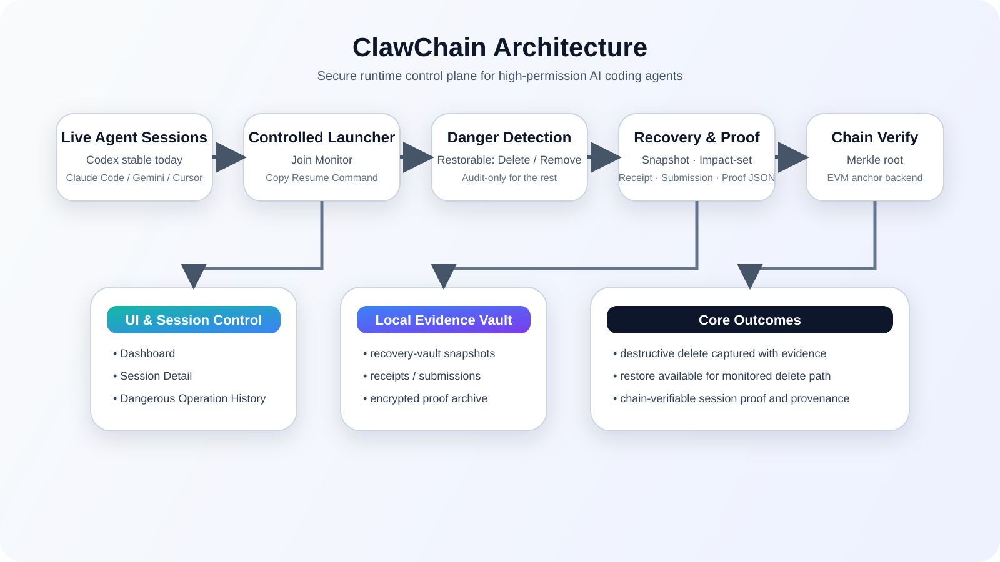

Runtime safety for high-privilege agent execution
Control autonomous coding agents before risky actions become irreversible loss.
ClawChain is the operator-facing control plane around agentic engineering. It discovers live coding-agent sessions, routes them into monitored execution, preserves snapshot-backed recovery material before destructive deletes complete, and exports proof that can be checked against an EVM anchor.
Live session discovery
Snapshot-backed restore
Readable proof export
EVM verification
Live coding agent detected
Delete captured
Snapshot vault updated before loss finalized
Proof anchored
anchor_backend: evm:31337

Positioning
Not a blockchain demo, not a passive audit log. ClawChain is the runtime control layer around risky coding-agent execution.
intervene on the live session
preserve recovery material
restore the target path
export operator-readable proof
Product
A runtime product for teams who cannot treat agent behavior as a black box.
ClawChain is built for the moment where an operator needs to understand what an agent is doing, stop trusting blind execution, and keep recovery and evidence coherent under pressure.
01
Runtime Intervention
Watch live agent sessions, surface the risky ones, and move them into a controlled execution path with monitored resume and handoff commands.
02
Recovery Before Regret
Capture delete-style destructive operations early enough to keep a restorable snapshot vault instead of reconstructing evidence after the damage is done.
03
Operator-Readable Proof
Proof stays inspectable by engineers: recovery context, receipts, submissions, anchor references, and field checks all land in a readable log.
04
Verifiable Execution Trail
When local EVM bootstrap is enabled, the same workflow closes with a commitment anchor that can be validated against the monitored session.
Console
The working surface is built for operators, not screenshots.
The product console is where sessions are discovered, monitored routes are started, dangerous operations are reviewed, restores are executed, and proof is exported without dropping into a pile of disconnected scripts.
- Live and archived session cards with monitored status
- Dangerous-operation history with restore controls
- Session detail view with resume and handoff actions
- Proof export and chain verification fields in one place
Operator-visible evidence, not hidden background state
Workflow
The safety loop is intentionally narrow, explicit, and operational.
ClawChain is strongest where teams actually need decisive help today: monitoring live sessions, handling destructive deletes, restoring targets cleanly, and keeping proof coherent enough to trust.
Discover live sessions
Detect running high-privilege coding-agent sessions already active on the host and surface them in the operator view.
Join monitored execution
Route the session into the controlled launcher and service path, so the next risky operation happens inside the monitored boundary.
Preserve and restore
Capture snapshot-backed recovery material for delete-style risk, then restore the target path and confirm it has been brought back.
Export and verify proof
Generate a readable proof log and, when enabled, validate the same commitment fields against the local EVM backend.
Deploy
Bring the runtime up quickly, then test the full operator loop.
The setup path creates or refreshes config, bootstraps the local chain when enabled, starts the service, verifies health, and launches the console surface.
Windows
conda create -y -n ClawChain python=3.12 pip
conda activate ClawChain
pip install -r ../ClawChain/requirements.txt
pip install -e ../ClawChain
../ClawChain/setup_clawchain.cmd 8888Linux / macOS
conda create -y -n ClawChain python=3.12 pip
conda activate ClawChain
pip install -r ../ClawChain/requirements.txt
pip install -e ../ClawChain
bash ../ClawChain/setup_clawchain.sh 8888First Product Validation
1. Start or locate a live coding-agent session
2. Open the console
3. Click Join Monitor
4. Trigger a delete-style action
5. Restore the target
6. Export proof
7. Verify anchor fields
Architecture
Local-first control, explicit recovery claims, extensible agent adapters.
Discovery, recovery material, service state, proof storage, and operator actions stay close to the host execution environment.
The product is strongest where it can be explicit: delete-risk capture, snapshot restoration, readable proof, and anchor verification.
Codex is the stable path today, with the runtime built around an adapter-friendly model for more agent CLIs over time.
Next Step
Use this page to present the product. Use the console when you need control.
ClawChain is a product surface for runtime intervention around autonomous coding agents. The landing page explains the system; the operator console is where the actual recovery and verification work happens.